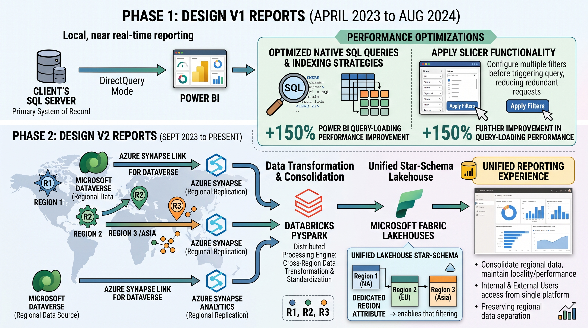
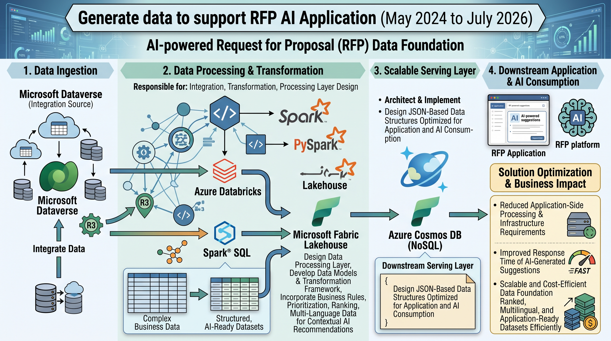
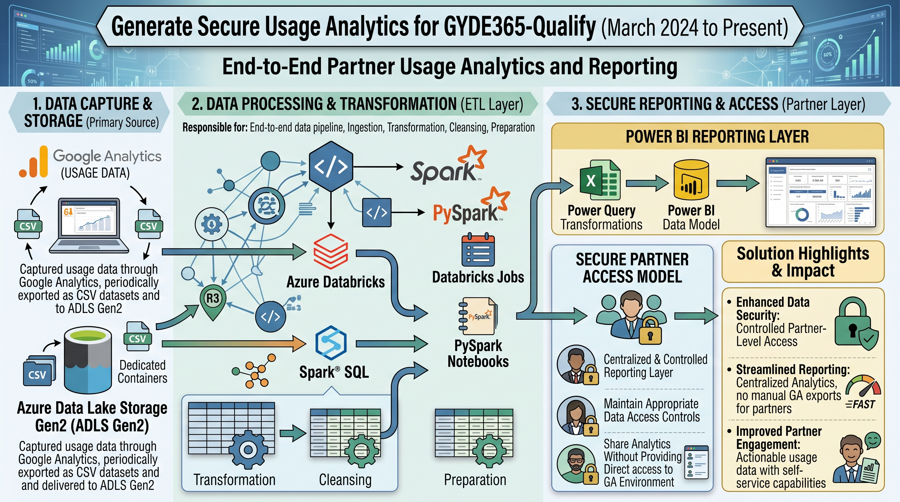
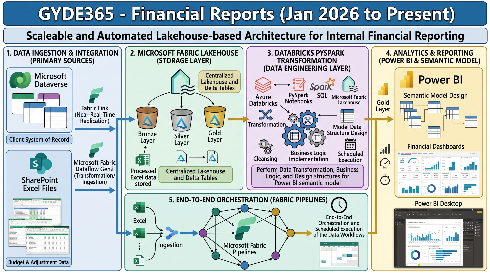
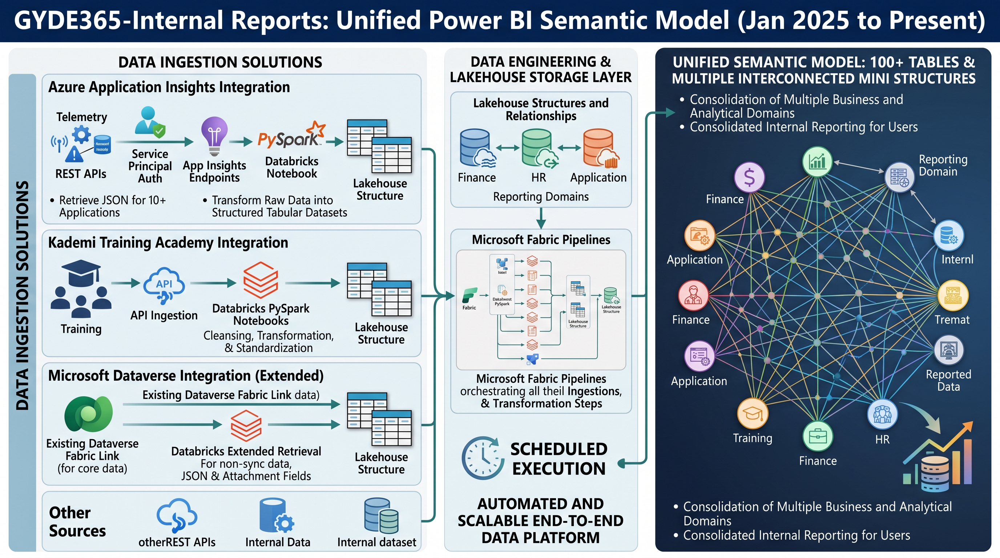
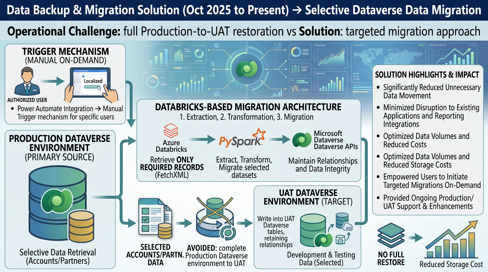

Projects
Milestones in the learning journey
Real client projects and personal builds — spanning enterprise lakehouses, real-time streaming, AI platforms, and cost engineering across Azure, Databricks, and Microsoft Fabric.
Client: SEER 365 (UK)

2022 – Present
GYDE365 Discover Partner Reporting
5-phase transformation from legacy stored procedures to AI-powered Fabric lakehouse — 150+ report pages, 64% cost cut, 6× faster refresh.
Read more
2025 – 2026
ROM In-Portal Snapshot Live Reporting
Sub-15-second real-time Power BI via Databricks Structured Streaming over Azure Event Hubs into Fabric Direct Lake. Delivered in 2–3 weeks vs 2–3 months.
Read more
2023 – Present
Design Partner Reporting
Multi-region architecture consolidating 3 regional Synapse/Dataverse environments into one Fabric Lakehouse — saving £3,500/month.
Read more
2024 – 2026
RFP AI Application — Data Platform
End-to-end data engineering pipeline for an AI-powered RFP platform — Databricks, Cosmos DB, multi-language ranked AI-ready datasets.
Read more
2024 – Present
GYDE365 Qualify — Analytics & Partner Reporting
Secure partner usage analytics from Google Analytics via ADLS Gen2 and Databricks, with partner-level row-level security in Power BI.
Read more
2026 – Present
GYDE365 Financial Reports
Financial analytics platform integrating Dataverse and SharePoint Excel via Fabric Dataflow Gen2 and Databricks with automated Fabric Pipeline orchestration.
Read more
2025 – Present
GYDE365 Internal Reports
100+ table Power BI semantic model integrating Application Insights (10+ apps), Kademi API, Dataverse, and REST APIs across multiple business domains.
Read more
2025 – Present
Dataverse Backup & Migration Solution
Selective Prod-to-UAT Dataverse migration via Databricks + FetchXML — eliminating 1-day full restores, reducing UAT data volume by 67%.
Read moreClient: Clearly Cloudy (UK)
Client: Auxilium Services (Dubai)
Personal Projects

2026
Agentic AI Customer Service Platform
Production RAG platform processing 506+ product PDFs with hybrid semantic search and structured data fusion on Databricks.
Read more
2026
AI Portfolio Chat Agent
Serverless AI assistant powered by Google Gemini and Cloudflare Workers, embedded directly into this portfolio.
Read more